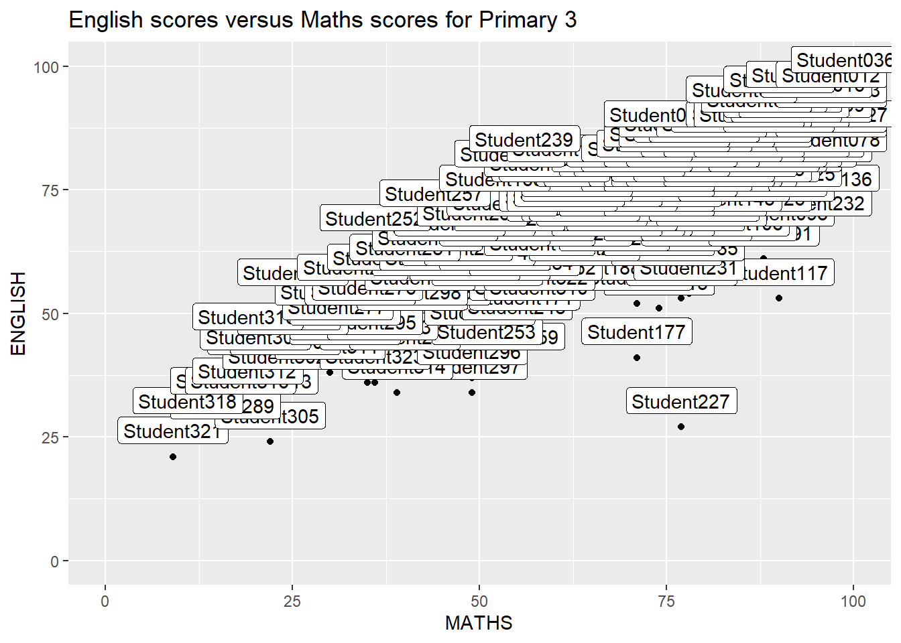

pacman::p_load(ggrepel, patchwork,
ggthemes, hrbrthemes,
tidyverse) Hands-on Exercise 2
Beyond ggplot2 Fundamentals
2.1 Overview
This chapter will introduce several ggplot2 extensions for creating a more elegant and effective statistical graphics. By the end of this exercise, one should be able to:
control the placement of annontation on a graph by using functions provided in ggrepel package,
create professional publication quality figure by using functions provided in the ggthemes and hrbrthemes packages, and
plot composite figure by combining ggplot2 graphs by using patchwork package.
2.2 Getting started
2.2.1 Installing and loading the required libraries
Besides tidyverse, the following R packages will be used in this exercise.
ggrepel: an R package provides geoms for ggplot2 to repel overlapping text labels.
ggthemes: an R package provides some extra themes, geoms, and scales for ‘ggplot2’.
hrbrthemes: an R package provides typography-centric themes and theme components for ggplot2.
patchwork: an R package for preparing composite figure created using ggplot2.
The code chunk below will be used to check if these packages have been installed and also will load them onto your working R environment.
The following code chunk loads the extrafont package and imports system fonts so that they can be used in plots, which is instrumental in packages such as hrbrthemes.
pacman::p_load(extrafont)
font_import()Importing fonts may take a few minutes, depending on the number of fonts and the speed of the system.
Continue? [y/n] loadfonts(device = "win")2.2.2 Importing data
This exercise will be using a data file called Exam_data. It consists of year-end examination grades of a cohort of primary 3 students from a local school. It is in a csv file format.
The code chunk below imports exam_data.csv into R environment by using read_csv() function of readr package. readr is one of the tidyverse package.
exam_data <- read_csv("data/Exam_data.csv")There are a total of seven attributes in the exam_data tibble data frame. Four of them are categorical data type and the other three are in continuous data type.
The categorical attributes are: ID, CLASS, GENDER and RACE.
The continuous attributes are: MATHS, ENGLISH and SCIENCE.
2.3 Beyond ggplot2 Annontation: ggrepel
One of the challenges in plotting statistical graph is annotation, especially with large number of data points.

ggplot(data=exam_data,
aes(x= MATHS,
y=ENGLISH)) +
geom_point() +
geom_smooth(method=lm,
linewidth=0.5) +
geom_label(aes(label = ID),
hjust = .5,
vjust = -.5) +
coord_cartesian(xlim=c(0,100),
ylim=c(0,100)) +
ggtitle("English scores versus Maths scores for Primary 3")ggrepel is an extension of ggplot2 package which provides geoms for ggplot2 to repel overlapping text as in the examples on below.
We simply replace geom_text() by geom_text_repel() and geom_label() by geom_label_repel.
2.3.1 Working with ggrepel
ggplot(data=exam_data,
aes(x= MATHS,
y=ENGLISH)) +
geom_point() +
geom_smooth(method=lm,
linewidth=0.5) +
geom_label_repel(aes(label = ID),
fontface = "bold") +
coord_cartesian(xlim=c(0,100),
ylim=c(0,100)) +
ggtitle("English scores versus Maths scores for Primary 3")2.4 Beyond ggplot2 Themes
ggplot2 comes with eight built-in themes, they are: theme_gray(), theme_bw(), theme_classic(), theme_dark(), theme_light(), theme_linedraw(), theme_minimal(), and theme_void().

ggplot(data=exam_data,
aes(x = MATHS)) +
geom_histogram(bins=20,
boundary = 100,
color="grey25",
fill="grey90") +
theme_gray() +
ggtitle("Distribution of Maths scores") Refer to this link to learn more about ggplot2 Themes
2.4.1 Working with ggtheme packages
ggthemes provides ‘ggplot2’ themes that replicate the look of plots by Edward Tufte, Stephen Few, Fivethirtyeight, The Economist, ‘Stata’, ‘Excel’, and The Wall Street Journal, among others.
In the example below, The Economist theme is used.

ggplot(data=exam_data,
aes(x = MATHS)) +
geom_histogram(bins=20,
boundary = 100,
color="grey25",
fill="grey90") +
ggtitle("Distribution of Maths scores") +
theme_economist()It also provides some extra geoms and scales for ‘ggplot2’. Consult this vignette to learn more.
2.4.2 Working with hrbthemes packages
hrbrthemes package provides a base theme that focuses on typographic elements, including where various labels are placed as well as the fonts that are used.

ggplot(data=exam_data,
aes(x = MATHS)) +
geom_histogram(bins=20,
boundary = 100,
color="grey25",
fill="grey90") +
ggtitle("Distribution of Maths scores") +
theme_ipsum()The second goal centers around productivity for a production workflow. In fact, this “production workflow” is the context for where the elements of hrbrthemes should be used. Consult this vignette to learn more.

ggplot(data=exam_data,
aes(x = MATHS)) +
geom_histogram(bins=20,
boundary = 100,
color="grey25",
fill="grey90") +
ggtitle("Distribution of Maths scores") +
theme_ipsum(axis_title_size = 18,
base_size = 15,
grid = "Y")
Learning point
axis_title_sizeargument is used to increase the font size of the axis title to 18,base_sizeargument is used to increase the default axis label to 15, andgridargument is used to remove the x-axis grid lines.
2.5 Beyond Single Graph
It is not unusual that multiple graphs are required to tell a compelling visual story. There are several ggplot2 extensions provide functions to compose figure with multiple graphs. In this section, one will learn how to create composite plot by combining multiple graphs. First, the three statistical graphics will be created by using the code chunk below.

p1 <- ggplot(data=exam_data,
aes(x = MATHS)) +
geom_histogram(bins=20,
boundary = 100,
color="grey25",
fill="grey90") +
coord_cartesian(xlim=c(0,100)) +
ggtitle("Distribution of Maths scores")Next

p2 <- ggplot(data=exam_data,
aes(x = ENGLISH)) +
geom_histogram(bins=20,
boundary = 100,
color="grey25",
fill="grey90") +
coord_cartesian(xlim=c(0,100)) +
ggtitle("Distribution of English scores")Lastly, a scatterplot for English score versus Maths score will be created as shown below.

p3 <- ggplot(data=exam_data,
aes(x= MATHS,
y=ENGLISH)) +
geom_point() +
geom_smooth(method=lm,
linewidth=0.5) +
coord_cartesian(xlim=c(0,100),
ylim=c(0,100)) +
ggtitle("English scores versus Maths scores for Primary 3")2.5.1 Creating Composite Graphics: pathwork methods
There are several ggplot2 extension’s functions support the needs to prepare composite figure by combining several graphs such as grid.arrange() of gridExtra package and plot_grid() of cowplot package. In this section, a ggplot2 extension called patchwork which is specially designed for combining separate ggplot2 graphs into a single figure will be further explored.
Patchwork package has a very simple syntax where one can create layouts super easily. Here’s the general syntax that combines:
Two-Column Layout using the Plus Sign
+.Parenthesis
()to create a subplot group.Two-Row Layout using the Division Sign
/
2.5.2 Combining two ggplot2 graphs
Figure in the tabset below shows a composite of two histograms created using patchwork. Notice the simplicity of the syntax.

p1 + p22.5.3 Combining three ggplot2 graphs
More complex composite can be plotted using appropriate operators. For example, the composite figure below is plotted by using:
/operator to stack two ggplot2 graphs,|operator to place the plots beside each other,()operator the define the sequence of the plotting.

(p1 / p2) | p32.5.4 Creating a composite figure with tag
In order to identify subplots in text, patchwork also provides auto-tagging capabilities as shown in the figure below.

((p1 / p2) | p3) +
plot_annotation(tag_levels = 'I')2.5.5 Creating figure with insert
Beside providing functions to place plots next to each other based on the provided layout. With inset_element() of patchwork, one or several plots or graphic elements can be freely placed on top or below another plot.

p3 + inset_element(p2,
left = 0.02,
bottom = 0.7,
right = 0.5,
top = 1)2.5.6 Creating a composite figure by using patchwork and ggtheme
Figure below is created by combining patchwork and theme_economist() of ggthemes package discussed earlier.
patchwork <- (p1 / p2) | p3
patchwork & theme_economist()2.6 Additional work for exploration
This section is reserved for further exploration.